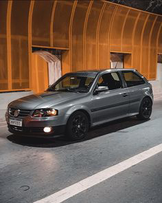
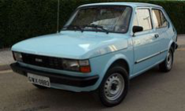
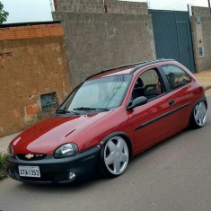
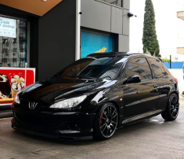
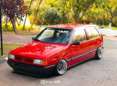

| Autos recomendables para modificar y sus aproximados precios | |||||
|---|---|---|---|---|---|
| Autos | Stunt Argentina | ||||
| Puesto | Nombre | Pais de origen | Marca | Precio | Foto |
| 1 | Gol Power | Aleman | Volksvagen | 4,900,000 |  |
| 2 | Fiat 147 | Italiano | Fiat | 3,150,000 |  |
| 3 | Corsa | Estadounidense | Chevrolet | 2,850,000 |  |
| 4 | Peugeot 206 | Frances | Peugeot | 5,000,000 |  |
| 5 | Fiat Uno | Italia | Fiat | 2,690,000 |  |
El stunt de modificaciones
o stunt automovilístico
se refiere a la práctica de realizar acrobacias y maniobras extremas en automóviles altamente modificados. Esta forma de stunt es parte de la cultura del automovilismo y se originó como una expresión de creatividad y habilidad técnica por parte de entusiastas de los automóviles que buscaban mostrar sus vehículos personalizados de manera espectacular.
La cultura de los automóviles personalizados ha existido durante décadas. Los entusiastas han estado modificando y personalizando sus vehículos para mejorar el rendimiento, el estilo y la funcionalidad. Estas modificaciones pueden incluir mejoras en el motor, el sistema de suspensión, el sistema de escape, carrocería y el interior del automóvil.
Los "show cars" o automóviles de exposición se convirtieron en una parte integral de la cultura de los automóviles stunt. Los propietarios de estos vehículos altamente modificados comenzaron a exhibir sus creaciones en eventos y ferias automovilísticas. Esto incluía mostrar el aspecto único y el rendimiento mejorado de sus autos.
Hoy en día, el stunt de modificaciones es una subcultura del automovilismo con seguidores apasionados y competencias en todo el mundo. Los entusiastas continúan personalizando y mejorando sus vehículos para lograr un rendimiento sobresaliente
y exhiben sus habilidades en eventos y competencias específicas de stunt automovilístico.